| Previous | Table of Contents | Next |
Example 18.2 Consider the data of the memory-cache study of Example 18.1. The estimated response and the errors for each of the 12 observations are shown in Table 18.2. The estimated responses for each experiment are computed by adding the products of effects and the sign table entries for the experiment. For example, the estimated response for the first experiment is
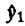 = q0 – qA – qB + qAB = 41 – 21.5 – 9.5 + 5 = 15
The experimental errors are computed by subtracting the estimated from the measured values. For example, for the first replication of the first experiment,
e11 = y11 – = 15 – 15 = 0
Notice that the sum of the errors in each experiment is zero and hence the total sum of all errors is zero also. Thus
SSE = 02 + 32 + (–3)2 + (–3)2 + 02 + 32 + 12
+ 42 + (–5)2 + (–2)2 + (–2)2 + 42
= 102
As in the 22 design, the percentage of variation explained by each factor is helpful in deciding whether a factor has a significant impact on the response. However, unlike the 22 design, now the variation due to experimental errors can also be isolated since we have multiple observations for each factor-level combination.
The total variation or Total Sum of Squares (SST) is given by
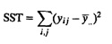
Here, 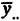 denotes the mean of responses from all replications of all experiments. The dots in the subscript indicate the dimension along which the averaging is done. Thus, 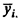 denotes the means of responses in all replications of the ith experiment and 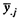 denotes the mean of responses in the jth replication of all experiments.
The SST can be divided into four parts as follows:
SST = SSA + SSB + SSAB + SSE
where each SS (sum of square) corresponds to the expression above it. Thus, SSA, SSB, and SSAB are the variations explained by factors A, B, and interaction AB, respectively. The SSE is the unexplained variation attributed to the experimental errors.
A derivation of the division of the SST into four parts is as follows.
Derivation 18.1 The model for 22r design is
yij = q0 + qAxAi + qBxBi + qABxAixBi + eij
Adding the terms of this equation across all 22r observations, we get
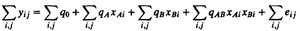
Since the x’s and their products as well as all errors add to zero, we have
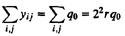
The mean response is given by
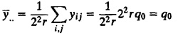
The total variation is
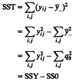
Here, SS0 represents the sum of squares of the mean. Squaring both sides of Equation (18.1) and ignoring the cross-product terms (since they add to zero), we have
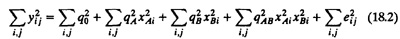
The terms of this equation correspond to various sums of squares, and we have
SSY = SS0 + SSA + SSB + SSAB + SSE
or
SST = SSY – SS0 = SSA + SSB + SSAB + SSE
Incidently, Equation (18.2) provides an easy way to compute SSE:
SSE = SSY – 22r(q02 + qA2 + qb2 + qAB2)
The following example illustrates the allocation of variation and computation of SSE.
Example 18.3 For memory-cache study of Example 18.1:
- SSY = 152 + 182 + 122 + 452 + . . . + 752 + 752 + 812 = 27,204
- SS0 = 22rq02 = 12 × 412 = 20,172
- SSA = 22rqA2 = 12 × (21.5)2 = 5547
- SSB = 22rqB2 = 12 × (9.5)2 = 1083
- SSAB = 22rqAB2 = 12 × 52 = 300
- SSE = 27,204 – 22 × 3(412 + 21.52 + 9.52 + 52) = 102
- SST = SSY – SS0 = 27,204 – 20,172 = 7032
Notice that the SSE computed here is the same as that obtained earlier in Example 18.2. Also, note that the sum of squares add up as follows:
- SSA + SSB + SSAB + SSE = 5547 + 1083 + 300 + 102 = 7032 = SST
Thus, the total variation of 7032 can be divided into four parts. Factor A explains 5547/7032, or 78.88%, of the variation. Similarly, factor B explains 15.40%, and interaction AB explains 4.27% of the variation. The remaining 1.45% is unexplained and is attributed to errors.
The effects computed from a sample are random variables and would be different if another set of experiments is conducted. The confidence intervals for the effects can be computed if the variance of the sample estimates are known.
If we assume that errors are normally distributed with zero mean and variance σe2, then it follows from the model that the yi’s are also normally distributed with the same variance σe2. Now consider an effect, for example, q0:
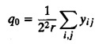
Since q0 is a linear combination of normally distributed variables, it is also normally distributed and its variance is σe2/(22r).
The variance of errors can be estimated from the SSE as follows:
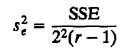
The quantity on the right side of this equation is called the Mean Square of Errors (MSE). The denominator is 22(r – 1), which is the number of independent terms in the SSE. This is because the r error terms corresponding to the r replications of an experiment should add up to zero. Thus, only r – 1 of these terms can be independently chosen. Thus, the SSE has 22(r – 1) degrees of freedom.
The estimated variance of q0 is sq02 = se2/(22r). The variance of other effects, qA, qB, and qAB, can also be similarly shown to be Se2/(22r). In other words,
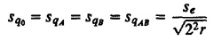
| Previous | Table of Contents | Next |